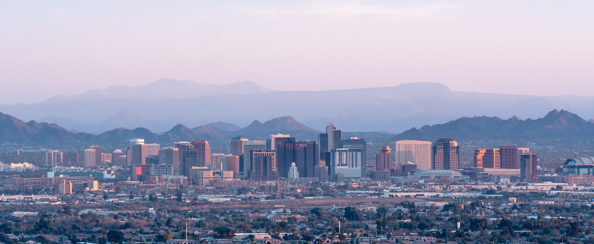

Welcome
The goal of this website is to showcase Phoenix’s architecturally significant spaces and educate visitors about how design, climate, and culture intersect in Arizona’s built environment.
Use the navigation above to explore four featured locations: Taliesin West, Arizona Biltmore, Cosanti, and Burton Barr Central Library.
Featured Buildings
Each page provides facts, images, and short histories about the sites, along with information that can help visitors learn more or plan a visit.
- Taliesin West – Frank Lloyd Wright’s desert laboratory and winter home in Scottsdale.
- Arizona Biltmore – A historic resort known for its Biltmore blocks and Art Deco influences.
- Cosanti – Paolo Soleri’s experimental studio and home of the iconic bronze and ceramic bells.
- Burton Barr Central Library – A modern civic landmark designed by Will Bruder and DWL Architects.
Building Overview
This table gives a quick comparison of the four featured buildings.
| Building | Location | Architect | Main Focus |
|---|---|---|---|
| Taliesin West | Scottsdale, AZ | Frank Lloyd Wright | Desert-integrated campus and architecture school |
| Arizona Biltmore | Phoenix, AZ | Albert Chase McArthur | Resort hotel with patterned Biltmore block walls |
| Cosanti | Paradise Valley, AZ | Paolo Soleri | Experimental earth-cast forms and wind bells |
| Burton Barr Library | Phoenix, AZ | Will Bruder + DWL Architects | Civic library with dramatic natural light |
Feedback
The purpose of this form is to collect feedback and opinions from visitors who explore the website and may have visited the locations.